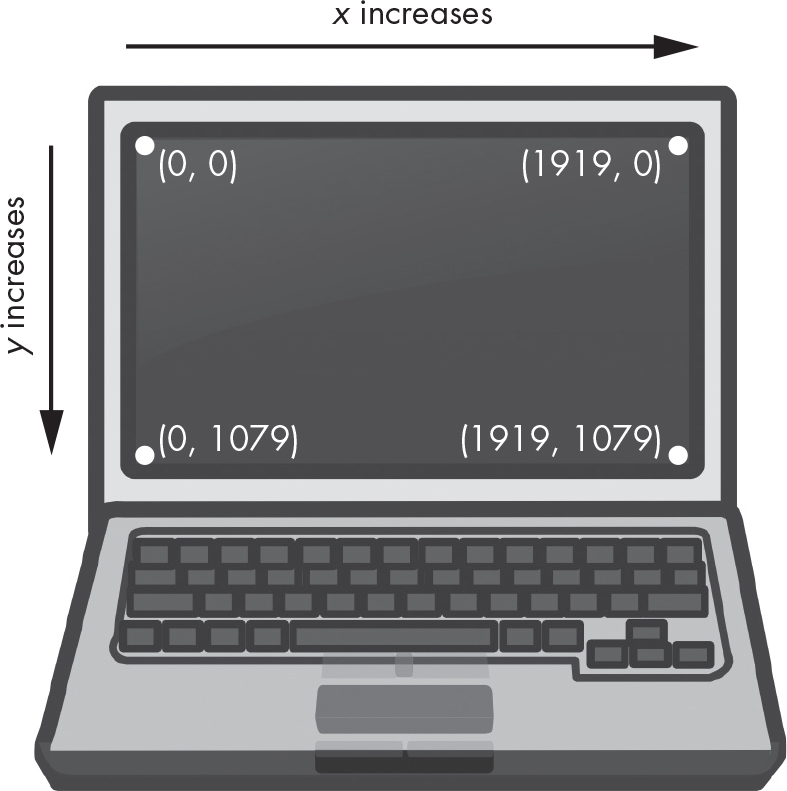
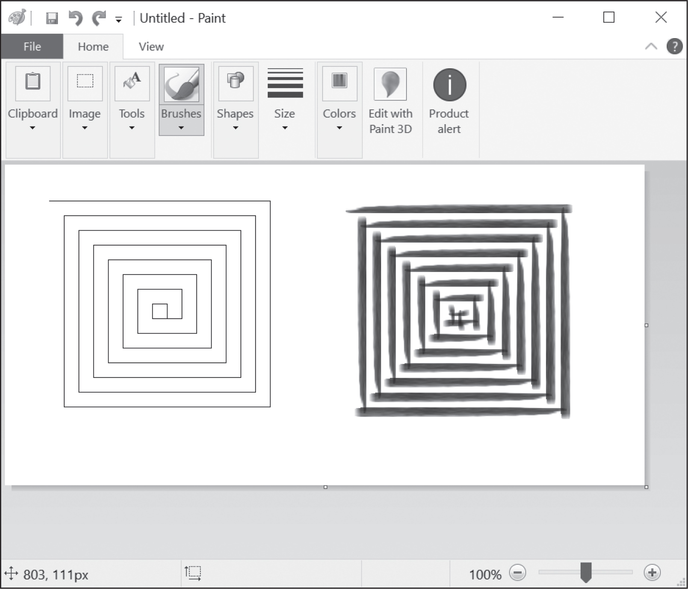
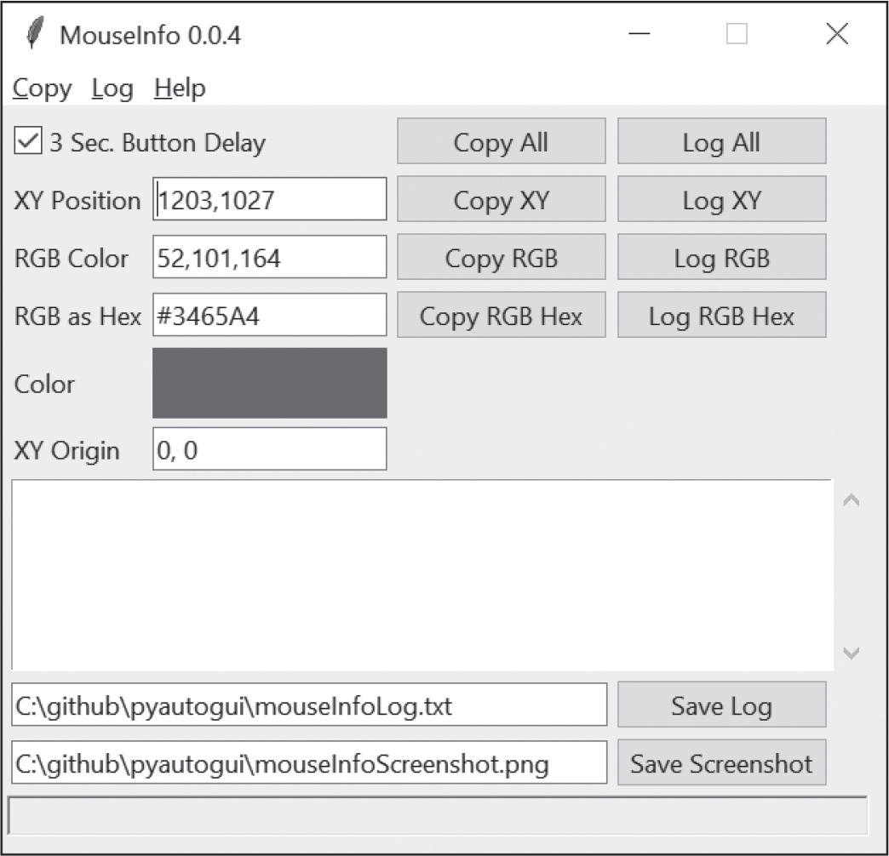
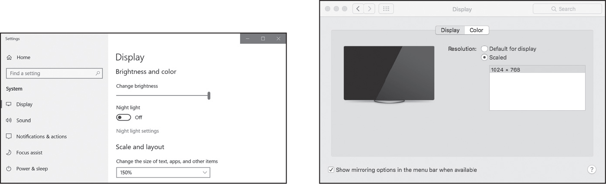
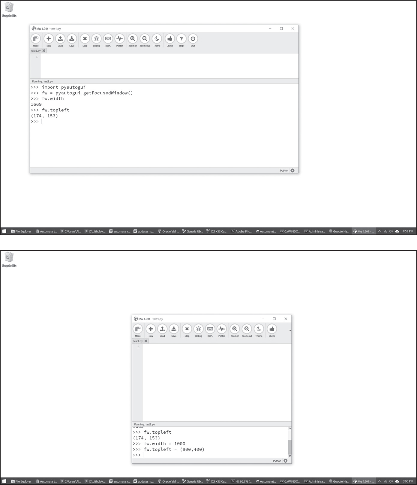
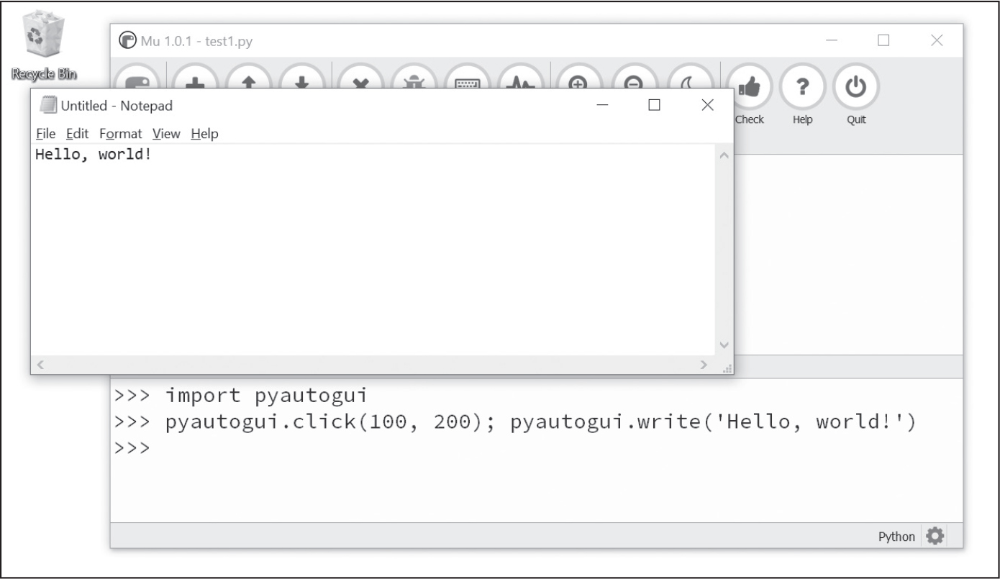

23 キーボードとマウスの制御

スプレッドシートの編集、ファイルのダウンロード、プログラムの起動などができるPythonのパッケージは便利ですが、（例えば専用の会計ソフトなど）作業で使っているアプリケーションに対応しているPythonのパッケージが存在しない場合があります。コンピュータでの作業を自動化する究極のツールは、キーボードとマウスを直接制御するプログラムです。人間がコンピュータの前に座ってアプリケーションを操作しているかのように、他のアプリケーションにバーチャルなキーストロークやマウスクリックを送信するプログラムです。
これはグラフィカルユーザーインターフェース自動化（GUI自動化）と呼ばれる技術です。GUI自動化では、人間のユーザーがコンピュータの前に座ってできることなら何でもできます（キーボードにコーヒーをこぼすことはできませんが）。GUI自動化はロボットの腕をプログラムで制御するようなものです。ロボットの腕の動きをプログラムして、キーボードを打ち込んだりマウスを動かしたりします。頭を使わずにマウスをクリックしたりフォームに入力したりする作業に対して特に有効です。アカウント登録やログインなどのウェブページにボットを検知するCAPTCHAがあるのは、この強力な技術に対抗するためです。そのようにして対抗しないと、GUI自動化により、無料アカウントが大量に作成され、ソーシャルメディアにはスパムがあふれ、パスワードが推測されてしまいます。
RPAと喧伝される革新的な（高価な）自動化ツールを販売している企業があります。この種の製品は、本章で紹介するPyAutoGUIライブラリを使って自分で書くPythonスクリプトと本質的に違いがありません。PyAutoGUIライブラリには、マウスの動きやボタンのクリックなどをシミュレートする関数が備わっています。本章で紹介するのはPyAutoGUIの機能のごく一部です。https://
警告
自分で書いたプログラムを pyautogui.pyという名前で保存しないようにしてください。その名前で保存すると、import pyautoguiを実行したときに、PythonがPyAutoGUIではなく自分で書いたプログラムをインポートしてしまい、AttributeError: module 'pyautogui' has no attribute 'click'のようなエラーが発生します。
macOSでのアクセシビリティ設定
セキュリティ対策として、通常、macOSではプログラムがマウスやキーボードを制御できないようになっています。macOSでPyAutoGUIを動かすには、アクセシビリティを設定しなければなりません。この設定をしないとPyAutoGUIの関数を呼び出しても何も起こりません。
Pythonプログラムを呼び出すMuかIDLEかターミナルを開いてください。その状態でシステム環境設定からアクセシビリティタブを開きます。現在開いているアプリケーションが「下のアプリケーションにコンピュータの制御を許可」の下に表示されているので、Mu、IDLE、ターミナルなどPythonプログラムを呼び出すアプリケーションにチェックを入れてください。この変更を行うにはパスワードの入力が求められます。
計画通りに進める
GUI自動化に進む前に、発生するかもしれない問題から抜け出す方法を知っておく必要があります。Pythonはものすごい速さでマウスを動かしてキーを入力します。他のプログラムがついていけないほどの速さです。何らかの問題があってプログラムがマウスを動かし続けると、何が起こっていてどうすればその問題から抜け出せるかわからなくなります。ディズニー映画『ファンタジア』の「魔法使いの弟子」でミッキーのバケツで水汲みを続けるほうきのように、指示通りに動いているプログラムを制御できなくなります。マウスが動き回っていると、Muエディタをクリックして閉じるのも困難なので、プログラムを止めるのも一苦労です。GUI自動化の問題から抜け出す方法がいくつか用意されているのでここで紹介します。
停止とフェイルセーフ
プログラムにバグがありキーボードやマウスを使ってシャットダウンできなくなっても、PyAutoGUIのフェイルセーフ機能を使えます。マウスを画面の四隅に向けて素早く動かします。PyAutoGUIの関数は呼び出しごとに0.1秒停止してからアクションを実行するので、マウスを四隅に動かす時間の余裕があります。PyAutoGUIはマウスカーソルが四隅にあればpyautogui.FailSafeException例外を送出します。PyAutoGUI固有の機能です。pyautogui.PAUSEに0.1以外の数値を設定すれば停止秒数を調整することができます。
PyAutoGUIプログラムを停止させる必要があるときは、マウスを画面の四隅に向けて素早く動かして停止させてください。
ログアウト
制御できなくなったGUI自動化プログラムを停止させる最もシンプルな方法はログアウトです。ログアウトすればすべての実行中のプログラムが終了します。WindowsとLinuxではCTRL-ALT-DELを押します。macOSでは-SHIFT-Qを押します。ログアウトしたら保存していない作業は失われますが、コンピュータの再起動より手軽です。
マウスの移動の制御
この節ではPyAutoGUIでマウスを動かしてその位置を追跡する方法を紹介しますが、その前にPyAutoGUIの座標系を説明します。
PyAutoGUIのマウスの関数は第21章で説明したのと同じx座標とy座標を使います。x座標とy座標が両方とも0の原点は画面の左上隅です。x座標は右方向に増えていき、y座標は下方向に増えていきます。座標はすべて正の整数です。負の座標はありません。

図 23-1：解像度が1920×1080のコンピュータ画面の座標
解像度とはスクリーンの横と縦のピクセル数のことです。画面の解像度が1920×1080なら、左上の座標は(0, 0)で、右下の座標は(1919, 1079)です。
pyautogui.size()関数は画面の幅と高さのピクセルをSize名前付きタプルで返します。名前付きタプルは本書の範囲外ですが、基本的に整数のインデックスに加えて名前の属性でも要素にアクセスできるタプルです。以下の式を対話型シェルに入力してみてください。
>>> import pyautogui
>>> screen_size = pyautogui.size() # 画面解像度の取得
>>> screen_size
Size(width=1920, height=1080)
>>> screen_size[0], screen_size[1]
(1920, 1080)
>>> screen_size.width, screen_size.height
(1920, 1080)
>>> tuple(screen_size)
(1920, 1080)
pyautogui.size()関数は解像度が1920×1080のコンピュータでは(1920, 1080)のSizeオブジェクトを返します。画面の解像度に応じて返り値は異なります。
マウスの移動
画面の座標を理解できたのでマウスの移動を説明します。pyautogui.moveTo()関数はマウスカーソルを指定した位置へと瞬時に移動させます。この関数の第一引数はx座標、第二引数はy座標の整数値です。オプションのdurationキーワード引数では、整数または浮動小数点数でマウスの移動時間を秒単位で指定します。このキーワード引数を指定しない場合のデフォルトは0で、瞬時に移動します。（PyAutoGUIの関数のdurationキーワード引数はすべてオプションです。）
>>> import pyautogui
>>> for i in range(10): # 正方形を描くようにマウスを動かす
... pyautogui.moveTo(100, 100, duration=0.25)
... pyautogui.moveTo(200, 100, duration=0.25)
... pyautogui.moveTo(200, 200, duration=0.25)
... pyautogui.moveTo(100, 200, duration=0.25)
...
この例では、指定した座標で時計回りに正方形を10回描くようにマウスカーソルを動かします。duration=0.25とキーワード引数を指定しているので、一つの移動に0.25秒かかります。pyautogui.moveTo()呼び出しで第三引数を指定しなければマウスカーソルは瞬間移動します。
pyautogui.move()関数はマウスカーソルを現在の位置から相対的に移動させます。以下の例では先ほどの例と同じようにマウスを移動させますが、コードの実行開始時にマウスがあった位置を出発点とします。
>>> import pyautogui
>>> for i in range(10):
... pyautogui.move(100, 0, duration=0.25) # 右
... pyautogui.move(0, 100, duration=0.25) # 下
... pyautogui.move(-100, 0, duration=0.25) # 左
... pyautogui.move(0, -100, duration=0.25) # 上
...
pyautogui.move()関数も3つの引数を取ります。右方向に移動させるピクセル数、下方向に移動させるピクセル数、移動に要する時間（オプション）です。第一引数に負の整数を指定すると左方向に、第二引数に負の整数を指定すると上方向に、それぞれマウスを移動させます。
現在位置の取得
pyautogui.position()関数を呼び出すとマウスの現在位置を取得できます。関数が呼び出されたときにマウスカーソルがあるx座標とy座標のPoint名前付きタプルが返されます。Point名前付きタプルの0と1の整数インデックスかxとyの属性でx座標とy座標にアクセスできます（widthとheightの属性があるSize名前付きタプルと似ています）。対話型シェルに以下の内容を入力してマウスの現在位置を取得してみてください。
>>> pyautogui.position() # マウスの現在位置の取得
Point(x=311, y=622)
>>> pyautogui.position() # マウスの現在位置をもう一度取得
Point(x=377, y=481)
>>> p = pyautogui.position() # さらにもう一度取得
>>> p
Point(x=1536, y=637)
>>> p[0] # インデックス0はx座標
1536
>>> p.x # 属性xもx座標
1536
マウスカーソルの位置に応じて実行結果が変わります。
マウス操作の制御
マウスを移動させる方法と画面上の位置を取得する方法がわかりましたから、クリック、ドラッグ、スクロールの説明をします。
クリック
pyautogui.click()メソッドを呼び出せばバーチャルなマウスクリックをコンピュータに送信できます。デフォルトではマウスの現在位置での左クリックです。オプションの第一引数と第二引数を渡せばx座標とy座標を指定してクリックを送信できます。
マウスのどのボタンをクリックするかはbuttonキーワード引数で'left'、'middle'、'right'のいずれかを指定します。例えば、pyautogui.click(100, 150, button='left')は座標(100, 150)でマウスを左クリックしますし、pyautogui.click(200, 250, button='right')は(200, 250)で右クリックします。
以下の式を対話型シェルに入力してみてください。
>>> import pyautogui
>>> pyautogui.click(10, 5) # マウスを(10, 5)に移動してクリック
マウスカーソルが画面の左上隅付近に移動して1回左クリックします。「クリック」とはマウスのボタンを押してそのまま動かさずに離す動作です。マウスのボタンを押すpyautogui.mouseDown()を呼び出してからマウスのボタンを離すpyautogui.mouseUp()を呼び出してもクリックする動作になります。これらの関数はclick()と同じ引数を取ります。click()関数はこれら2つの関数を呼び出す便利なラッパーです。
さらに便利なように、pyautogui.doubleClick()関数はマウスの左クリックを2回行います（ダブルクリック）。pyautogui.rightClick()関数で右クリック、pyautogui.middleClick()関数で中クリックを実行できます。
ドラッグ
ドラッグとはマウスのボタンを押しながら移動させる動作のことです。例えば、ファイルをフォルダアイコンにドラッグすればそのフォルダに移動できますし、カレンダーアプリの予定をドラッグで移動させられます。
PyAutoGUIには、マウスカーソルを指定位置までドラッグするpyautogui.dragTo()と、現在位置から相対的に位置を指定して移動させるpyautogui.drag()関数があります。dragTo()とdrag()の引数はmoveTo()とmove()の引数と同じで、x座標（右方向への移動ピクセル数）、y座標（下方向への移動ピクセル数）、オプションの移動時間です。（macOSでは速すぎると正常にドラッグできないので、durationキーワード引数を渡すようにしてください。）
この関数を試してみましょう。WindowsならMS Paint、macOSならPaintbrush、LinuxならGNU Paintなど、描画アプリを開いてください（オンラインのhttps://
描画アプリでキャンバスを開いて鉛筆やブラシを選択した状態で、以下の内容を記載したspiralDraw.pyを実行します。
import pyautogui
❶ pyautogui.sleep(5)
❷ pyautogui.click() # クリックしてウィンドウをアクティブにする
distance = 300
change = 20
while distance > 0:
❸ pyautogui.drag(distance, 0, duration=0.2) # 右に移動
❹ distance = distance - change
❺ pyautogui.drag(0, distance, duration=0.2) # 下に移動
❻ pyautogui.drag(-distance, 0, duration=0.2) # 左に移動
distance = distance - change
pyautogui.drag(0, -distance, duration=0.2) # 上に移動
このプログラムを実行すると5秒間の待機時間があります(❶)。この間にマウスカーソルを鉛筆かブラシを選択した状態で描画アプリのウィンドウに載せてください。PyAutoGUIのsleep()関数はtime.sleep()と全く同じですが、コードにimport timeと書かなくてもすみます。spiralDraw.pyはマウスを制御してクリックすることにより描画アプリのウィンドウをアクティブにします(❷)。アクティブウィンドウとは、キーボードからの入力やマウスのドラッグなどのアクションを受け付けているウィンドウのことです。アクティブウィンドウはフォーカスされたウィンドウや前面のウィンドウと呼ばれることもあります。描画アプリがアクティブなら、spiralDraw.pyは図23-2のような正方形のうず巻きを描画します。
変数distanceはwhileループの初回に300から始まり、最初のdrag()呼び出しが0.2秒でカーソルを300ピクセル右にドラッグします(❸)。それからdistanceを280に減らし(❹)、2回目のdrag()呼び出しがカーソルを280ピクセル下にドラッグさせます(❺)。3回目のdrag()呼び出しはカーソルを280ピクセル左にドラッグさせます(❻)。そしてdistanceを260に減らし、最後のdrag()呼び出しはカーソルを260ピクセル上にドラッグさせます。ループの反復ごとにマウスは右、下、左、上とdistanceを小さくしながらドラッグします。このコードの反復処理により、マウスは正方形のうず巻きを描画します。
第21章で紹介したPillowパッケージでうず巻きを描画することもできますが、マウスを制御してMS Paintで描画すると、図23-2のようにブラシのスタイルを変更できますし、グラデーションや塗りつぶしなどの機能を使うこともできます。ブラシの設定をあらかじめ選択してから（あるいはブラシの設定をするPythonのコードを実行してから）、このうず巻き描画プログラムを実行します。

図 23-2：MS Paintでブラシを変更したpyautogui.drag()による描画の実行結果
手でマウスを動かしてこのようなうず巻きを描画することもできますが、正確に描画するにはゆっくりと動かさなければなりません。PyAutoGUIなら数秒で描画できます。
スクロール
最後に紹介するPyAutoGUIのマウスの関数はscroll()です。上下にスクロールさせる量を整数で指定します。OSやアプリケーションによって数値の単位は変わるので、実験して確認する必要があります。スクロールはマウスカーソルの現在位置から始まります。正の整数を渡すと上にスクロールし、負の整数を渡すと下にスクロールします。Muエディタの対話型シェルで以下の内容を実行すると、Muエディタウィンドウでマウスカーソルが上にスクロールします。
>>> pyautogui.scroll(200)マウスカーソルがテキストフィールドにあればMuが上方にスクロールします。
マウス移動の計画を立てる
画面を自動的にクリックするプログラムを書く際に難しいのは、クリックしたい対象のx座標とy座標を把握することです。pyautogui.mouseInfo()関数を利用すればx座標とy座標がわかります。
pyautogui.mouseInfo()関数は、プログラムの一部として実行するのではなく、対話型シェルから呼び出すことを想定しています。PyAutoGUIに同梱しているMouseInfoという名前の小さなアプリケーションを起動します。そのアプリケーションのウィンドウを図23-3に示します。

図 23-3：MouseInfoアプリケーションのウィンドウ
以下の式を対話型シェルに入力してみてください。
>>> import pyautogui
>>> pyautogui.mouseInfo()
これを実行するとMouseInfoウィンドウが立ち上がります。そのウィンドウでは、マウスカーソルの現在位置の座標と色（RGBタプルとHEXカラーコード）の情報が示されます。色自体もウィンドウに示されます。
8つのCopyとLogのボタンをクリックすると、この座標やピクセルの情報を記録できます。Copy All、Copy XY、Copy RGB、Copy RGB Hexのボタンはそれぞれ対応する情報をクリップボードにコピーします。Log All、Log XY、Log RGB、Log RGB Hexのボタンはそれぞれ対応する情報をウィンドウの大きなテキストフィールドに書き出します。Save Logボタンをクリックすると、このログテキストを保存できます。
デフォルトではButton Delayチェックボックスがオンになっており、CopyやLogのボタンをクリックしてからコピーやログ出力が起こるまでに3秒の遅延があります。この遅延時間中にマウスを目的の位置まで移動させます。このチェックボックスをオフにして、マウスを目的の位置まで移動させ、コピーやログに対応するF1からF8までのキーを押すほうが簡単かもしれません。MouseInfoウィンドウ上部のコピーとログのメニューからどのキーがどのボタンに対応しているかわかります。
例えば、3 Sec. Button Delayをオフにして、マウスを画面上の目的の位置に移動させてからF6を押すと、そのマウスの位置のx座標とy座標がウィンドウ中央の大きなテキストフィールドに記録されます。この座標をPyAutoGUIスクリプトで利用できます。
MouseInfoについての詳細はhttps://
スクリーンショットの取得
GUI自動化プログラムでは、クリックと入力だけでなく、画面に現在表示されている内容のスクリーンショットの取得もできます。このスクリーンショット取得機能では、現在の画面のPillowのImageオブジェクトが返されます。この節の続きを読む前に第21章を読んでPillowパッケージをインストールすることをおすすめします。
Pythonでスクリーンショットを取得するには、pyautogui.screenshot()関数を呼び出します。以下の式を対話型シェルに入力してみてください。
>>> import pyautogui
>>> im = pyautogui.screenshot()
変数imにはスクリーンショットのImageオブジェクトが格納されます。その変数imに格納されているImageオブジェクトについて、他のImageオブジェクトと同じようにメソッドを呼び出せます。Imageオブジェクトについては第21章で詳しく説明しました。
GUI自動化プログラムで灰色のボタンをクリックしたいとしましょう。click()メソッドを呼び出す前に、スクリーンショットを取得して、スクリプトでクリックするピクセルを確認したほうがよいかもしれません。クリックしたい灰色のボタンと色合いが異なっていたら何かがうまくいっていないとわかります。ウィンドウが予期せず移動したのかもしれませんし、ポップアップダイアログがボタンを隠しているのかもしれません。そのまま続行して想定外の箇所をクリックして大惨事を引き起こすのではなく、プログラムを停止させられます。
pixel()関数で画面のピクセルを指定してRGB値を取得できます。以下の式を対話型シェルに入力してみてください。
>>> import pyautogui
>>> pyautogui.pixel(0, 0)
(176, 176, 175)
>>> pyautogui.pixel((50, 200))
(130, 135, 144)
pixel()にXY座標を表す2つの整数を渡すと、その座標のピクセルの色が返されます。pixel() の返り値は赤、緑、青の量を整数で表したRGBタプルです。（スクリーンショット画像は不透明なのでアルファ値は返されません。）
PyAutoGUIのpixelMatchesColor()関数は、x座標とy座標を指定した画面上の点の色が指定した色と合致すればTrueを返します。第一引数はx座標、第二引数はy座標、第三引数は比較対照するRGB値のタプルです。以下の式を対話型シェルに入力してみてください。
>>> import pyautogui
❶ >>> pyautogui.pixel((50, 200))
(130, 135, 144)
❷ >>> pyautogui.pixelMatchesColor(50, 200, (130, 135, 144))
True
❸ >>> pyautogui.pixelMatchesColor(50, 200, (255, 135, 144))
False
pixel()で指定した座標のピクセルの色をRGBタプルで取得してから(❶)、同じ座標とRGBタプルをpixelMatchesColor()に渡すと(❷)、Trueが返ります。RGBタプルの値を変えて同じ座標についてpixelMatchesColor()をもう一度呼び出すと(❸)、falseが返ります。このメソッドはGUI自動化プログラムでclick()を呼び出そうとするときに役立ちます。指定した座標の色が合致するかの判定は厳密に行われます。例えば、(255, 255, 254)と(255, 255, 255)のようにわずかでも異なればpixelMatchesColor()はFalseを返します。
画像認識
PyAutoGUIでどこをクリックするか前もってわからない場合には、画像認識を利用できます。PyAutoGUIにクリックしたい画像を渡すとその座標を取得します。
例えば、送信ボタンの画像を事前にスクリーンショットで取得したsubmit.pngというファイルがあるとすると、locateOnScreen()関数はその画像が見つかった座標を返します。locateOnScreen()の動作確認をしてみましょう。画面上の小さな領域のスクリーンショットを取得し、その画像のファイルを保存して、対話型シェルに以下の内容を入力してください。'submit.png'はご自身で取得したスクリーンショット画像のファイル名に置き換えてください。
>>> import pyautogui
>>> box = pyautogui.locateOnScreen('submit.png')
>>> box
Box(left=643, top=745, width=70, height=29)
>>> box[0]
643
>>> box.left
643
locateOnScreen()が返すBoxオブジェクトは、画像を画面上で最初に見つけた場所の左端のx座標、上端のy座標、幅、高さの名前付きタプルです。ご自身の画面でスクリーンショットを取得して試してみると、上で示した値とは異なるでしょう。
画像が画面上で見つからなければ、locateOnScreen()はImageNotFoundExceptionを送出します。画像が完全に一致しなければ画面上で認識されません。画像が1ピクセルでも違っていたらlocateOnScreen()はImageNotFoundException例外を送出します。画面の解像度を変更したら、変更前に取得したスクリーンショット画像は倍率が異なり変更後の画面の画像と一致しないかもしれません。倍率について本書では扱いませんが、現代の高解像度のディスプレイでは、図23-4に示すようにOSに応じて変更できます。

図 23-4：Windows（左側）とmacOS（右側）での倍率の設定
画像が画面上に複数見つかった場合には、locateAllOnScreen()はGeneratorオブジェクトを返します。Generatorオブジェクトについては本書でこれ以上説明しませんが、list()に渡すとBoxオブジェクトのリストが返されます。画面上で画像が見つかったそれぞれの場所に対応するBoxオブジェクトがあります。対話型シェルに続けて以下のように入力してください（'submit.png'はスクリーンショット画像のファイル名に置き換えてください）。
>>> list(pyautogui.locateAllOnScreen('submit.png'))
[(643, 745, 70, 29), (1007, 801, 70, 29)]
この例では画像が2箇所で見つかっています。画像が1箇所でしか見つからなければ、list(locateAllOnScreen())はBoxオブジェクトを1つだけ含むリストを返します。
指定した画像に対応するBoxオブジェクトが取得できれば、click()にそのタプルを渡すとその領域の中心をクリックできます。以下の式を対話型シェルに入力してみてください。
>>> pyautogui.click((643, 745, 70, 29))ショートカットとして、click()関数に画像ファイルの名前を直接渡すこともできます。
>>> pyautogui.click('submit.png')moveTo()関数とdragTo()関数も引数に画像ファイルの名前を取ることができます。画面上に指定した画像が見つからなければlocateOnScreen()が例外を送出しますから、try文の内側で呼び出したほうがよいでしょう。
try:
location = pyautogui.locateOnScreen('submit.png')
except pyautogui.ImageNotFoundException:
print('Image could not be found.')
try文とexcept文がなければ、例外を捕捉できずプログラムがクラッシュします。画像が必ず見つかるとは限りませんから、locateOnScreen()を呼び出すときにはtry文とexcept文を使うようにしたほうが望ましいです。PyAutoGUIの1.0.0より前のバージョンでは、locateOnScreen()が例外を送出するのではなくNoneを返します。この古いバージョンで例外を送出するにはpyautogui.useImageNotFoundException()を呼び出します。新しいバージョンで.useImageNotFoundException(False)を呼び出すとNoneが返されます。
ウィンドウ情報の取得
画像認識では安定して画面上の場所を特定できるとは限りません。1ピクセルでも異なるとpyautogui.locateOnScreen()は画像を見つけられません。指定したウィンドウが画面上のどこにあるかを見つける必要があるなら、PyAutoGUIのウィンドウ機能を使ったほうが高速かつ確実です。
注記
PyAutoGUIのバージョン1.0.0現在、ウィンドウ機能はWindowsでだけ動作し、macOSとLinuxでは動作しません。PyAutoGUIのウィンドウ機能はPyGetWindowパッケージを利用しています。
アクティブウィンドウの取得
アクティブウィンドウとは、画面上で前面に表示されておりキーボード入力を受け付けるウィンドウのことです。Muエディタでコードを書いているところならMuエディタのウィンドウはアクティブウィンドウです。画面上で一つのウィンドウだけがアクティブウィンドウになります。
対話型シェルでpyautogui.getActiveWindow()を呼び出すとWindowオブジェクトを取得できます（Windowsで実行した場合はWin32Windowオブジェクトです）。Windowオブジェクトを取得できれば、サイズ、位置、タイトルなどの属性を取得できます。
left, right, top, bottom そのウィンドウの左端と右端のx座標、上端と下端のy座標を表す整数
topleft, topright, bottomleft, bottomright そのウィンドウの左上、右上、左下、右下の四隅の座標を表すx座標とy座標の2つの整数のPoint名前付きタプル
midleft, midright, midtop, midbottom そのウィンドウの左中央、右中央、上中央、下中央の座標を表すx座標とy座標の2つの整数のPoint名前付きタプル
width, height そのウィンドウの幅と高さをピクセルで表す整数
size そのウィンドウの幅と高さをピクセルで表す2つの整数のSize名前付きタプル
area そのウィンドウの面積をピクセルで表す整数
center そのウィンドウの中央のx座標とy座標を整数で表すPoint名前付きタプル
centerx, centery そのウィンドウの中央のそれぞれx座標とy座標を表す整数
box そのウィンドウの左端、上端、幅、高さを表す4つの整数のBox名前付きタプル
title そのウィンドウの上部に表示されるタイトルバーのテキスト文字列
windowオブジェクトからそのウィンドウの位置、サイズ、タイトルの情報を取得するには、対話型シェルで以下のように入力してください。
>>> import pyautogui
>>> active_win = pyautogui.getActiveWindow()
>>> active_win
Win32Window(hWnd=2034368)
>>> str(active_win)
'<Win32Window left="500", top="300", width="2070", height="1208", title="Mu 1.0.1 – test1.py">'
>>> active_win.title
'Mu 1.0.1 – test1.py'
>>> active_win.size
Size(width=2070, height=1208)
>>> active_win.left, active_win.top, active_win.right, active_win.bottom
(500, 300, 2570, 1508)
>>> active_win.topleft
Point(x=500, y=300)
>>> pyautogui.click(active_win.left + 10, active_win.top + 20)
これらの属性を利用すればウィンドウ内の座標を正確に計算できます。クリックしたいボタンがウィンドウの左上隅から右へ10ピクセル下へ20ピクセルの位置にあることがわかっているとしたら、そのウィンドウの左上隅の画面上の座標が(300, 500)であれば、pyautogui.click(310, 520)を呼び出すとそのボタンをクリックできます。active_winにそのウィンドウのWindowオブジェクトを格納すれば、pyautogui.click(active_win.left + 10, active_win.top + 20でも同じです。この方法であれば、ボタンを見つけるのに遅くて不安定なlocateOnScreen()関数に頼らずにすみます。
他の関数でウィンドウを見つける
getActiveWindow()でその関数を呼び出した時点でのアクティブウィンドウを取得できますが、画面上の別のウィンドウのWindowオブジェクトを取得する必要がある場合もあるでしょう。以下の3つの関数はWindowオブジェクトのリストを返します。ウィンドウを見つけられなければ空のリストを返します。
pyautogui.getAllWindows() 画面上で見えるすべてのウィンドウのWindowオブジェクトのリストを返します。
pyautogui.getWindowsAt(x, y) 点(x, y)を含むすべての見えるウィンドウのWindowオブジェクトのリストを返します。
pyautogui.getWindowsWithTitle(title) タイトルバーに文字列titleを含む、すべての見えるウィンドウのWindowオブジェクトのリストを返します。
PyAutoGUIにはpyautogui.getAllTitles()という関数もあり、すべての見えるウィンドウのタイトル文字列を返します。
ウィンドウの操作
ウィンドウ属性はサイズや位置などの情報を教えてくれるだけではありません。値を設定してウィンドウをリサイズしたり移動したりできます。対話型シェルで次のように入力してみてください。
>>> import pyautogui
>>> active_win = pyautogui.getActiveWindow()
❶ >>> active_win.width # ウィンドウの幅を取得
1669
❷ >>> active_win.topleft # ウィンドウの位置を取得
Point(x=174, y=153)
❸ >>> active_win.width = 1000 # ウィンドウのりサイズ
❹ >>> active_win.topleft = (800, 400) # ウィンドウの移動
まず、Windowオブジェクトの属性からそのウィンドウのサイズ(❶)と位置(❷)の情報を取得します。Muエディタでこれらを実行してアクティブウィンドウであるMuエディタのウィンドウについてサイトと位置の情報を取得してから、図23-5のようにこのウィンドウの幅を狭めて(❸)移動(❹)させます。

図 23-5：Windowオブジェクトの属性でMuエディタのリサイズと移動の操作前（上側）と操作後（下側）
ウィンドウの最小化、最大化、アクティブ状態の取得や変更もできます。対話型シェルで次のように入力してみてください。
>>> import pyautogui
>>> active_win = pyautogui.getActiveWindow()
>>> active_win.isMaximized # ウィンドウが最大化されていればTrueが返される
False
>>> active_win.isMinimized # ウィンドウが最小化されていればTrueが返される
False
>>> active_win.isActive # ウィンドウがアクティブであればTrueが返される
True
>>> active_win.maximize() # ウィンドウの最大化
>>> active_win.isMaximized
True
>>> active_win.restore() # 最大化／最小化を元に戻す
>>> active_win.minimize() # ウィンドウの最小化
>>> import time
>>> # 5秒停止してその間に別のウィンドウをアクティブにする
>>> time.sleep(5); active_win.activate()
>>> active_win.close() # アクティブにしたウィンドウを閉じる
isMaximized、isMinimized、isActive属性にはそのウィンドウが現在最大化されているか、最小化されているか、アクティブであるかを示すブール値が入っています。maximize()、minimize()、activate()、restore()メソッドはウィンドウの状態を変更します。maximize()やminimize()でウィンドウを最大化・最小化した後でrestore()メソッドを呼び出すとそのウィンドウを元のサイズと位置に戻します。
close()メソッドはウィンドウを閉じます。このメソッドでは「本当に終了しますか？」のようなメッセージダイアログを表示せずにアプリケーションを終了してしまうので注意して使ってください。
ウィンドウ機能の詳細についてはPyAutoGUIのドキュメントをご参照ください。
キーボードの制御
PyAutoGUIにはバーチャルなキーボード入力の機能もあります。この機能を使えばフォームの入力やテキストの打ち込みができます。
文字列の入力
pyautogui.write()関数でキーボードから文字列を入力できます。入力がどうなるかは、どのウィンドウがアクティブになっていてどのテキストフィールドがフォーカスされているかによって変わります。入力を始める前に目的のテキストフィールドをマウスでクリックしてフォーカスしなければならない場合があります。
簡単な例として、テキストエディタウィンドウにPythonで自動的にHello, world!と入力してみましょう。まず新しいテキストエディタウィンドウを開き、PyAutoGUIで正しくクリックしてフォーカスできるように画面の左上のほうに移動させてください。次に対話型シェルで以下の内容を実行します。
>>> pyautogui.click(100, 200); pyautogui.write('Hello, world!')セミコロンで区切って2つのコマンドを1行に書いていることに注意してください。こうすれば対話型シェルでコマンドを1つずつ入力せずに一気に実行できます。コマンドを1つずつ入力するとclick()とwrite()の間に対話型シェルをフォーカスしてしまい、うまく動作しません。
このPythonスクリプトは、(100, 200)の座標をマウスでクリックし、テキストエディタウィンドウをフォーカスします。write()を呼び出してHello, world!というテキストをそのウィンドウに送ります。図23-6のようになるはずです。コードから自動的に入力できました。

図 23-6：PyAutoGUIを使ってテキストエディタをクリックしてHello, world!を入力した状態
write()関数はデフォルトで文字列全体を一瞬で入力します。オプションの第二引数で1文字入力するたびに停止する秒数を指定できます。この第二引数は停止する秒数を表す浮動小数点数値です。例えば、pyautogui.write('Hello, world!', 0.25)では、Hを入力してから0.25秒停止し、eを入力してから0.25秒停止し…と続きます。このように段階的に入力すれば、PyAutoGUIのデフォルトでの一瞬の入力についていけない遅いアプリケーションに対応できます。
PyAutoGUIは自動的にSHIFTキーを押してAや!のような文字を入力します。
キーの名前の指定
すべてのキーが一文字で表せるわけではありません。例えば、SHIFTや左矢印キーを一文字で表すことはできません。PyAutoGUIではこうしたキーを短い文字列で表します。'esc'でESCキーを、'enter'でENTERキーを表すといった具合です。
write()には一つの文字列引数を渡すのではなく、キーボードのキーのリストを渡すこともできます。例えば、以下のように呼び出すと、Aキーを入力し、次にBキーを入力し、次に左矢印キーを2回入力し（カーソルをaの前に移動し）、最後にXとYのキーを入力します。
>>> pyautogui.write(['a', 'b', 'left', 'left', 'X', 'Y'])左矢印キーを押すとカーソルが左に移動しますから、これはXYabという結果になります。PyAutoGUIでwrite()に渡してキー入力をできる文字列を表23-1に一覧で示します。
PyAutoGUIで利用できるキーを表す文字列のリストをpyautogui.KEYBOARD_KEYSで調べることもできます。'shift'という文字列はSHIFTキーを表しますから、'shiftleft'と同じです。同様に、'ctrl'、'alt'、'win'の文字列はすべて左側のキーを表します。
文字列 |
意味 |
|---|---|
'a', 'b', 'c', 'A', 'B', 'C', '1', '2', '3', '!', '@', '#'など |
その文字や記号 |
'enter' , 'return' , '\n' |
ENTERキー |
'esc' |
ESCキー |
'shiftleft', 'shiftright' |
左右のSHIFTキー |
'altleft', 'altright' |
左右のALTキー |
'ctrlleft', 'ctrlright' |
左右の CTRLキー |
'tab' , '\t' |
TABキー |
'backspace', 'delete' |
BACKSPACEキーとDELETEキー |
'pageup', 'pagedown' |
PAGE UPキーとPAGE DOWNキー |
'home', 'end' |
HOMEキーとENDキー |
'up', 'down', 'left', 'right' |
上下左右の矢印キー |
'f1', 'f2', 'f3'など |
F1〜F12キー |
'volumemute', 'volumedown', 'volumeup' |
ミュート、音量ダウン、音量アップのキー（キーボードによってはこれらのキーが存在しない場合がありますが、OSはこれらの擬似的なキー入力を認識します） |
'pause' |
PAUSEキー |
'capslock', 'numlock', 'scrolllock' |
CAPS LOCKキー、NUM LOCKキー、SCROLL LOCKキー |
'insert' |
INSキーまたはINSERTキー |
'printscreen' |
PRTSCキーまたはPRINT SCREENキー |
'winleft', 'winright' |
左右のWINキー（Windows） |
'command' |
COMMAND（）キー（macOS） |
'option' |
OPTIONキー（macOS） |
キーを押して離す
mouseDown()とmouseUp()の関数と同じように、pyautogui.keyDown()とpyautogui.keyUp()の関数はキーを押して離します。これらの関数にはキーを表す文字列を引数で渡します（特殊なキーについては表23-1を参照してください）。PyAutoGUIにはこの2つの関数をセットで実行してキーを入力する便利なpyautogui.press()関数があります。
以下のコードを実行すると、ドル記号（$）が入力されます（SHIFTキーを押した状態で4を入力します）。
>>> pyautogui.keyDown('shift'); pyautogui.press('4'); pyautogui.keyUp('shift')SHIFT,を押し、4を押して離し、SHIFTを離します。テキストフィールドに文字列を入力するならwrite()関数のほうが簡単です。しかしキー入力を受け付けるアプリケーションでは、press()関数のほうが扱いやすいでしょう。
ホットキーの組み合わせ
ホットキーはアプリケーションで何らかの動作を呼び起こすキー入力の組み合わせで、ショートカットと呼ばれることもあります。選択した部分をコピーするのに、WindowsとLinuxではCTRL-C、macOSでは-Cのホットキーがよく使われます。CTRLキーを押したままCキーを押し、Cキーを離してCTRLキーを離します。PyAutoGUIのkeyDown()とkeyUp()の関数でこれを行うなら、以下のように書きます。
pyautogui.keyDown('ctrl')
pyautogui.keyDown('c')
pyautogui.keyUp('c')
pyautogui.keyUp('ctrl')
これは複雑なので、複数のキーを引数に取って順番に押して離してくれるpyautogui.hotkey()関数を使うと便利です。以下のシンプルなコードでCTRL-Cを実行できます。
pyautogui.hotkey('ctrl', 'c')組み合わせるキーの数が多いホットキーではこの関数の便利さが際立ちます。Wordでは、CTRL-ALT-SHIFT-Sのホットキーの組み合わせでスタイル枠を表示します。8回関数を呼び出すのではなく（keyDown()4回とkeyUp()4回）、hotkey('ctrl', 'alt', 'shift', 's')を1回だけ呼び出せばすみます。
GUI自動化スクリプトの構築
GUI自動化スクリプトは退屈な作業を自動化する強力な方法ですが、細心の注意が要求されます。ウィンドウが違う場所にあったりポップアップが不意に表示されたりしたら、スクリプトが画面上の正しくない場所をクリックしてしまうかもしれません。GUI自動化スクリプトを構築する際のコツをお伝えします。
- ウィンドウの位置が変わらないように同じ画面解像度でスクリプトを実行する
- ボタンやメニューが毎回同じ場所に来るようにスクリプトがクリックするウィンドウを最大化する
- アプリケーションがクリックできる状態になるようにコンテンツをロードする余裕をもって停止時間を設ける
- 座標に頼るのではなくクリックするボタンやメニューをlocateOnScreen()で見つけ出すようにして、ボタンやメニューを見つけることができなければむやみにクリックするのではなくプログラムを中止する
- スクリプトがクリックするアプリケーションウィンドウが存在することをgetWindowsWithTitle()で確かめ、activate()メソッドでそのウィンドウを前面に出す
- 途中で中止しなければならない場合でも再開しやすいように、第5章で紹介したloggingモジュールを活用してスクリプトの実行内容を記録する
- 不意にポップアップウィンドウが表示されたりインターネット接続が切断したりする場合など、可能な限りあらゆる状況を想定してチェックする
- スクリプトが正しく動作しているかを監督する
スクリプトがクリックするウィンドウを設定できるようにスクリプトの開始時に停止時間を設けるのもよいでしょう。PyAutoGUIにはtime.sleep()と同じ動作をするsleep()関数があります（スクリプトにimport timeと書かなくても利用できます）。スクリプトがもうすぐ動き出すことを示すカウントダウンの数字を表示するcountdown()関数もあります。以下の式を対話型シェルに入力してみてください。
>>> import pyautogui
>>> pyautogui.sleep(3) # プログラムを3秒間停止させる
>>> pyautogui.countdown(10) # 10秒カウントダウンする
10 9 8 7 6 5 4 3 2 1
>>> print('Starting in ', end=''); pyautogui.countdown(3)
Starting in 3 2 1
上に書いたコツを意識すれば、使いやすくて予期せぬ状況からうまく復帰できるGUI自動化スクリプトを書けるようになります。
メッセージボックスの表示
これまでに書いてきたプログラムでは入出力にプレーンテキストを使ってきました（print()関数で出力、input()関数で入力）。しかし、PyAutoGUIではデスクトップで使っているすべてのプログラムを対象とするので、プログラムを実行しているMuやターミナルなどテキストベースのウィンドウが背景に隠れてしまいます。そのため、Muやターミナルウィンドウを使用した入出力が難しくなります。
この問題に対処するために、PyAutoGUIにはPyMsgBoxモジュールが備わっています。ポップアップ通知をしたり、入力を受け付けたりできます。メッセージボックス関数が4つあります。
pyautogui.alert(text) OKボタンが1つあるtextを表示します。
pyautogui.confirm(text) OKボタンとCancelボタンがあるtextを表示します。押されたボタンに応じて'OK'または'Cancel'を返します。
pyautogui.prompt(text) テキストフィールドがあるtextを表示します。入力された文字列を返します。
pyautogui.password(text) prompt()と同じですが、パスワードなどの秘密の情報を入力できるようにアスタリスクが表示されます。
これらの関数は第12章の「PyMsgBoxによるポップアップメッセージボックス」で紹介した4つの関数と同じです。
まとめ
PyAutoGUIパッケージを利用してGUI自動化スクリプトを書くと、マウスとキーボードを制御してコンピュータ上で動かすアプリケーションを操作できます。これは人間がマウスとキーボードでできることなら何でもできるくらい柔軟な方法ですが、やみくもにクリックしたり入力したりしてしまうという欠点があります。GUI自動化プログラムを書く際には、うまくいかない場合になるべく早くクラッシュするようにしてください。クラッシュするのは嫌ですが、プログラムが誤って動き続けるよりよっぽどマシです。
PyAutoGUIを使えば、マウスカーソルを画面の好きな場所に動かしてクリックできますし、文字を入力することもキーボードショートカットを実行することもできます。画面の色をチェックしてGUI自動化プログラムが予定通りに進んでいるかを確かめることもできます。スクリーンショットの撮影やクリックしたい座標の取得もできます。
これらのPyAutoGUIの機能を組み合わせて、コンピュータで頭を使わずに行っている反復作業を自動化できます。画面の上でマウスカーソルがひとりでに動いて自動的にテキストが入力されるのを見るのはまったくもってうっとりするような光景です。プログラムが仕事をしてくれるのを座って見ていることができます。賢いプログラムを書いて退屈な作業から解放されたことを思うと、ある種の満足感を得られます。
練習問題
1. どうすればPyAutoGUIのフェイルセーフ機能を呼び出してプログラムを停止させられますか？
2. 現在の画面解像度を返す関数は何ですか？
3. マウスカーソルの現在位置の座標を返す関数は何ですか？
4. pyautogui.moveTo()とpyautogui.move()はどう違いますか？
5. マウスをドラッグさせるにはどの関数を使いますか？
6. "Hello, world!"と文字を入力するにはどの関数を使いますか？
7. PyAutoGUIでキーボードの左矢印のような特殊なキーを押すにはどうしますか？
8. 現在の画面をscreenshot.pngという名前の画像ファイルに保存するにはどうしますか？
9. PyAutoGUIが関数を呼び出すたびに2秒停止させるにはどうしますか？
10. ウェブブラウザ内でクリックとキー入力を自動化したいときには、PyAutoGUIとSeleniumのどちらを使ったほうがよいですか？
11. PyAutoGUIではエラーが発生しやすいのはなぜですか？
12. タイトルにNotepadを含むすべてのウィンドウのサイズを取得するにはどうしますか？
13. Firefoxブラウザを画面上の他のウィンドウよりも前面に出してアクティブな状態にするにはどうしますか？
練習プログラム
以下の練習プログラムを書いてください。
忙しそうに見せる
多くのメッセンジャープログラムでは、一定期間マウスの動きがなければ離席中だと判断されるような仕組みが備わっています。コンピュータから離れても、離席中と表示されて怠けていると思われないようにしたいとします。10秒ごとにマウスカーソルを1ピクセル左右に動かすスクリプトを書いてください。これくらい小さい動きならスクリプトの実行中にコンピュータを操作する邪魔にならないでしょう。
クリップボードを利用したテキストフィールドの読み取り
pyautogui.write()でアプリケーションのテキストフィールドにキー入力をすることができますが、PyAutoGUI単体ではテキストフィールドにすでに入力されているテキストを読み取ることはできません。pyperclipモジュールを利用して、すでに入力されているテキストフィールドを読み取ります。PyAutoGUIでMuやメモ帳などのテキストエディタのウィンドウをクリックして前面に出し、テキストフィールド内をクリックして、CTRL-Aまたは-Aのホットキーですべて選択して、CTRL-Cまたは-Cのホットキーでクリップボードにコピーします。こうすればPythonスクリプトでimport pyperclipとpyperclip.paste()を実行することでクリップボードのテキストを読み取れます。
この手順でウィンドウのテキストフィールドを読み取ってコピーするプログラムを書いてください。pyautogui.getWindowsWithTitle('Notepad')でWindowオブジェクトを取得します（お使いのテキストエディタに応じて'Notepad'の部分を調整してください）。取得したWindowオブジェクトのtopとleftの属性でウィンドウの位置がわかり、activate()メソッドで画面の前面に出すことができます。それからtopとleftの属性に100〜200程度を加えた座標を指定してpyautogui.click()を実行することにより、テキストエディタのテキストフィールドをクリックして、フォーカスしてキー入力を受け付ける状態にします。pyautogui.hotkey('ctrl', 'a')とpyautogui.hotkey('ctrl', 'c')を呼び出してすべて選択してからクリップボードにコピーします。最後に、pyperclip.paste()を呼び出してクリップボードからテキストを取得し、Pythonプログラムに貼り付けます。こうすればこの文字列を好きなように使えます。ここではprint()で表示してみましょう。
PyAutoGUIのウィンドウ関数はPyAutoGUIのバージョン1.0.0現在、macOSとLinuxには対応しておらず、Windowsでしか動作しません。
ゲームをプレイするボットを作成する
Sushi Go Roundという古いFlashゲームがあります。正しい材料のボタンをクリックして客の寿司の注文に応えるゲームです。間違わずに素早く注文に対応できれば高得点が得られます。これはGUI自動化プログラムにうってつけです。ズルをして高得点を目指しましょう。Flashはもうサポートが終了していますが、https://